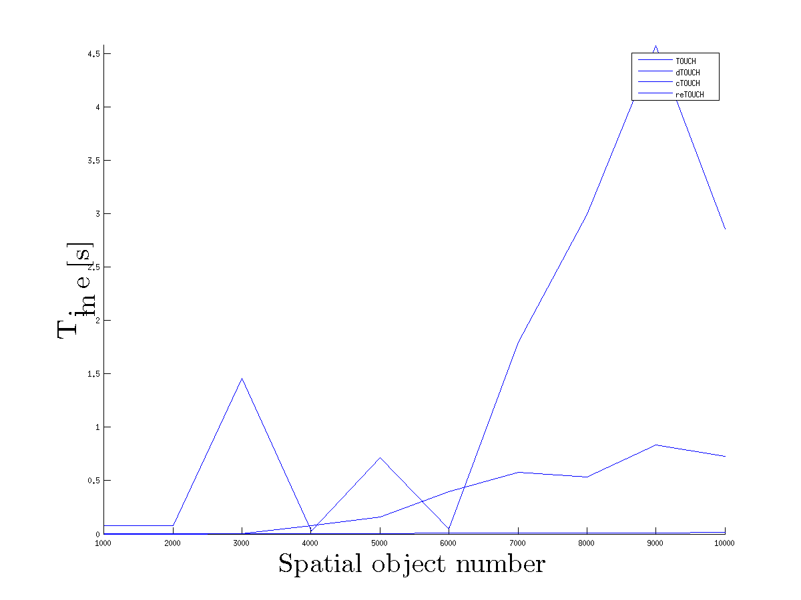
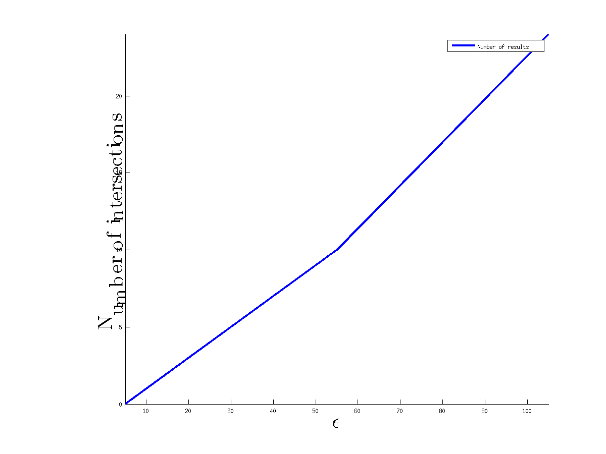

Result of TOUCH run
The figure shows dependacy of joining time of TOUCH-like algorithms on numbers of objects in sets.

The arument of this figure is some distance epsilon. The figure shows the dependacy of number of objects that are closer than epsilon.
